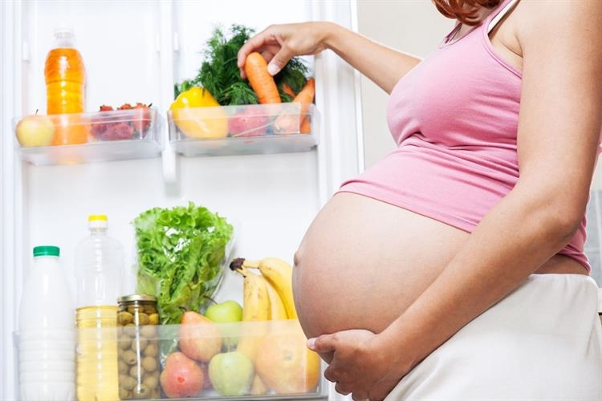
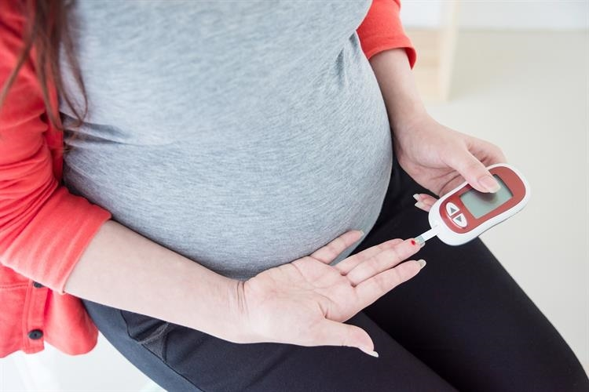

Gizi Seimbang Ibu Hamil (Gimbal) Merupakan website yang digunakan untuk mendapatkan
informasi terkait pemenuhan gizi seimbang ibu hamil, dapatkan informasi terkait pemenuhan gizi seimbang ibu hamil dengan
mudah dan terpercaya, bersama gimbal ibu hamil tak perlu risau
ARTIKEL TENTANG IBU HAMIL
Risiko Kehamilan Untuk 'Mama Muda'
Bolehkah Naik Pesawat Saat Hamil?
Kandungan Skin Care yang Cocok untuk Bumil!

Sayur-Sayuran Ini Harus Dihindari Ibu Hamil

Bahaya Diabetes Gestasional Bagi Ibu Hamil dan Janin
Jamu Tradisional yang Aman Diminum Ibu Hamil
VIDEO TENTANG IBU HAMIL
Makanan Wajib Saat Hamil, Agar Janin Cerdas!
Gizi dan Nutrisi Penting Untuk Ibu Hamil
CARA MENJAGA KEHAMILAN USIA 1 SAMPAI 3 BULAN
Kesehatan dan Gizi Ibu Hamil
5 Tips Ibu Hamil Bahagia, Tips Hamil Bahagia || 5 Tips for Happy Pregnancy, Tips for Happy Pregnancy
Hal yang Dilarang Saat Hamil Muda
Apakah Ibu Hamil Perlu Minum Vitamin dan Susu? - dr. Ardiansjah Dara Sjahruddin, SpOG., M.Kes.
Tips Mengurangi Rasa Sakit saat Melahirkan - dr. Ardiansjah Dara Sjahruddin, SpOG, MKes
Kehamilan adalah hal yang ditunggu-tunggu oleh para calon ibu di dunia ini. Akan tetapi kehamilan harus diwaspadai jika terjadi pada Moms yang masih berusia muda. Hal ini karena risiko yang ditimbulkan dari hamil di usia muda sangatlah tinggi.
Badan Kependudukan dan Keluarga Berencana Nasional (BKKBN) bahkan mencanangkan program Pendewasaan Usia Perkawinan (PUP) di mana usia minimal bagi perempuan untuk menikah adalah 21 tahun. Program tersebut tentu dicanangkan untuk mengurangi angka kematian ibu dan bayi yang disebabkan oleh kehamilan di usia dini.
Perlu Moms ketahui bahwa ada hamil di usia muda memiliki banyak resiko. Bestmom.id sudah merangkum beberapa resiko yang mungkin terjadi pada kehamilan di usia muda dan hal yang bisa dilakukan untuk meminimalisir risiko tersebut. Simak selengkapnya di sini.
Angka Kematian Tinggi Organ reproduksi remaja memang sudah bisa hamil karena sudah mengalami menstruasi sehingga sel telur bisa dibuahi. Meskipun begitu, organ tersebut belum siap dan belum matang untuk hamil dikarenakan usia sang ibu yang masih muda. Salah satu alasan ketidaksiapan organ tubuh serta organ reproduksi wanita adalah panggul yang sempit, sehingga meningkatkan resiko persalinan bayi.
Dengan begitu, bukan hanya angka kematian ibu, tapi angka kematian bayi juga tinggi apabila dikandung dan dilahirkan dari kondisi sang ibu yang masih muda.
Preeklamsia dan Bayi Lahir Prematur
Preeklamsia adalah tekanan darah tinggi pada ibu hamil yang terkadang ditandai dengan kejang-kejang. Kondisi ini sangat berbahaya bagi kesehatan ibu dan janin yang dikandungnya. Perkembangan janin di dalam rahim ibu juga bisa terhambat sehingga memicu terjadinya kehamilan prematur.
Kehamilan prematur juga berisiko pada kesehatan bayi. Bayi dapat mengalami komplikasi sehingga terancam mengalami gangguan pernapasan, hingga tumbuh kembang.
Berat Bayi Lahir Rendah (BBLR)
Karena potensi kelahiran prematur pada bayi, bayi juga berpotensi memiliki berat badan yang lebih rendah dibandingkan dengan berat badan bayi normal. Bayi dengan berat badan yang rendah akan membutuhkan perawatan khusus untuk bertahan hidup setelah baru dilahirkan.
Selain itu, berat bayi lahir rendah juga memicu terjadinya stunting atau kurangnya gizi dan nutrisi pada anak. Stunting juga mejadi konsentrasi yang serius dari pemerintah karena jumlah kasus Stunting yang terus bertambah.
Baby Blues dan Depresi Pasca Melahirkan
Pada dasarnya Baby blues dan depresi pasca melahirkan adalah kondisi yang sama, akan tetapi depresi berlangsung lebih lama. Baby blues adalah kondisi yang mencerminkan ketidaksiapan seorang ibu dalam memiliki anak.
Mereka akan cenderung merasa sedih dan tidak meiliki ikatan yang erat dengan sang bayi. Hal ini karena remaja pada usia dibawah 21 tahun cenderung memiliki kondisi psikologi yang tidak stabil.
Apa saja yang bisa dilakukan untuk meminimalisir resiko tersebut? Beberapa tips di bawah ini akan membantu Moms semua untuk mengurangi resiko-resiko di atas.
Konsultasi ke Dokter
Lakukanlah pemeriksaan kondisi kehamilan Anda secara rutin untuk mengetahui perkembangan kondisi janin. Selain menambah informasi, konsultasi ke dokter juga membuat Anda mengetahui apakah kondisi kehamilan Anda membutuhkan tindakan khusus untuk proses melahirkan nantinya.
Menerapkan Gaya Hidup Sehat
Penuhi nutrisi dan asupan vitamin untuk Anda setiap harinya. Semua makanan yang Anda konsumsi akan menjadi nutrisi tambahan untuk bayi. Olahraga yang rutin juga diperlukan agar kondisi badan semakin bugar.
dengan Orang Berpengalaman
Moms bia coba untuk cari dukungan ke orang yang berpengalaman mengalami kehamilan sebelumnya, bisa orang tua ataupun kerabat terdekat. Dukungan dari mereka sangatlah membantu untuk kesehatan mental dan meminimalisir terjadinya depresi.
Bolehkah Naik Pesawat Saat Hamil?
Sebenarnya, ibu hamil diperbolehkan dan aman-aman saja untuk bepergian dengan pesawat terbang. Selama kondisi tubuh serta kehamilan ibu dalam keadaan yang baik-baik saja, maka naik pesawat akan tetap aman-aman saja.
Namun, jika Anda mengidap beberapa kondisi berikut ini, Anda sangat tidak direkomendasikan untuk naik pesawat selama masa kehamilan. Kondisi yang harus Anda perhatikan yaitu:
Darah tinggi
Memiliki masalah pada leher rahim
Mengandung anak pertama pada usia 35 tahun
Memiliki kelainan plasenta
Mengidap diabetes
Pernah melahirkan secara prematur
Kandungan Skin Care yang Cocok untuk Bumil!
Kandungan apa sajakah yang boleh digunakan ibu hamil agar tetap cantik dan terawat selama masa kehamilan? Bestmom.id telah merangkum informasinya untuk Anda. Simak ulasan lengkapnya di bawah ini.
Salicylic Acid
Kandungan salicylic acid memiliki fungsi untuk meredakan inflamasi dan mengurangi pembengkakan sebum pada kulit wajah, sehingga banyak dimanfaatkan untuk megobati permasalahan kulit yang berjerawat.
Salicylic acid juga berfungsi sebagai antibakteri untuk mengangkat sel kulit mati dan mencegah munculnya komedo dan juga jerawat.
Kandungan ini masih aman digunakan oleh ibu hamil dalam takaran pakai dua kali sehari dengan persentase yang tidak lebih dari 2% di dalam sebuah produk.
Grapeseed Oil
Grapeseed oil yang terkandung di dalam sebuah produk kecantikan biasanya digunakan untuk menghidrasi kulit agar lebih lembab, khususnya bagi yang memiliki jenis kulit kering.
Penggunaan grapeseed oil masih tergolong aman bagi ibu hamil, namun hanya untuk penggunaan luar saja. Hindari mengonsumsi grapeseed oil untuk diminum dalam bentuk suplemen atau semacamnya.
Hyaluronic Acid
Kandungan hyaluronic acid dalam sebuah produk skin care biasanya digunakan untuk mengatasi kulit yang kering agar lebih lembab, segar, dan lembut.
Kandungan ini tergolong cukup aman digunakan oleh ibu hamil, bahlkan ibu menyusui.
Niacinamide
Niacinamide adalah kandungan di dalam skin care yang aman untuk digunakan di kulit ibu hamil karena berasal dari vitamin B3. Niacinamide juga mengandung antioxidant yang berfungsi mengurangi hiperpigmentasi pada kulit, mengurangi garis halus serta kesan keriput pada wajah.
Zinc Oxide
Jika Anda familiar dengan penggunaan sunscreen, maka Anda pasti tidak asing dengan kandungan yang satu ini. Kandungan ini tidak akan menyerap kedalam kulit ketika diaplikasikan. Zinc Oxide hanya aan berada di lapisan luar kulit sehingga aman untuk digunakan. Oleh karena itu, tidak apa-apa menggunakan sunscreen dengan zinc oxide jika khawatir terpapar cahaya matahari yang terik.
Vitamin C
Vitamin C adlaah kandungan yang banyak terkandung di dalam produk skincare karena manfaatnya yang bagus untuk meningkatkan kolagen pada kulit sehingga bisa membantu Anda untuk mencerahkan bagian kulit yang menggelap.
Itu dia kandungan-kandungan dalam skincare yang aman dan cocok digunakan oleh ibu hamil. Kini Anda tidak perlu khawatir untuk menggunakan produk-produk tersebut untuk nejaga kecantikan Anda selama masa kehamilan.
Sayur-Sayuran Ini Harus Dihindari Ibu Hamil
Tauge Mentah
Tauge adalah salah satu jenis kecambah yang tumbuh di bawah tanah. Sudah diketahui bahwa kecambah berukuran sangat kecil dan ditanam dengan siraman pestisida agar terhindar dari mikroorganisme yang berbahaya. Jika tidak diberikan pestisida, maka mikroorganisme yang menempel di sayuran yang sangat kecil itu sangat sulit untuk dibilas bahkan dengan air sekalipun.
Oleh karena itu, jika tauge dicuci dengan pestisida, maka zat kimia akan masuk ke dalam tubuh dan berbahaya bagi ibu dan janin. Di sisi lain, jika tidak diberi pestisida, maka mikroorganisme dan bakteri berbahaya bisa berkembang di dalam tubuh bersama janin. Jadi hindarilah penggunaan tauge di makanan Anda, atau Anda bisa mengolahnya sendiri supaya yakin bahwa Anda mengkonsumsi tauge yang sudah bersih.
Pare
Sayuran pahit ini tetap nikmat ya Moms, jika dikonsumsi dengan sambal atua bumbu yang lain. Namun kandungan alkali pada pare menimbulkan efek sakit kepala, sakit perut, mual, hingga gangguan pada mata. Kondisi ini tentu tidak mau Anda rasakan, bukan?
Selain itu, pada beberapa komplikasi karena mengkonsumsi pare, ibu bisa berpotensi melahirkan secara premature.
Pepaya Muda
Pepaya muda mengandung getah dan papain yang berbahaya bagi janin. Papain bisa melemahkan selaput yang melindungi janin karena tubuh merespon papain sebagai prostaglandin. Kemudian getah papaya sendiri bisa memicu terjadinya kontraksi ang sering. Hal ini bisa memicu persalinan dini yang beresiko bagi kesehatan bayi setelah lahir.
Lalapan Mentah
Lalapan adalah pendamping sambal yang sangat nikmat dimakan secara bersamaan. Lalapan biasa dikonsumsi secara mentah atau direbus selama beberapa menit. Berhati-hatilah jika memakan lalapan, karena lalapan mentah biasanya masih mengandung pestisida dan bakteri yang berbahaya bagi tubuh ibu dan kondisi janin yang sangat sensitif terhadap segala asupan yang masuk.
Petai dan Jengkol
Petai dan jengkol adalah sayuran yang memiliki cita raa khas Indonesia yang sangat nikmat dimakan dengan sambal atau olahan lainnya. Namun protein yang sangat tinggi di dalam petai bisa membuat ginjal Anda yang sedang hamil bekerja lebih keras. Hal ini tentunya berbahaya dan menimbulkan gangguan pencernaan.
Sementara jengkol sendiri mengandung asam jengkolat. Kandungan ini akan snagat berbahay ajika dikonsumsi dalam jumlah tertentu. Asam Jengkolat bisa membentuk kristal di dalam ginjal yang kemudian merobek lapisan kemih. Hal ini bisa berdampak pada pendarahan kencing, hingga gagal ginjal.
Bahaya Diabetes Gestasional Bagi Ibu Hamil dan Janin
Apa itu Diabetes Gestasional? Diabetes Gestasional adalah diabetes yang dialami oleh ibu yang sedang hamil. Diabetes ini juga hanya berlangsung selama ibu sedang hamil, dan akan hilang setelah ibu melahirkan. Meski begitu, gejala yang ditimbulkan dan dampak dari Diabetes Gestasional ini cukup berbahaya bagi ibu dan janin.
Dalam beberapa kasus, bahkan Diabetes Gestasional ini bisa berujung pada komplikasi penyakit jika tidak ditangani dengan baik, seperti tekanan darah yang sangat tinggi hingga preeklampsia yang akan mengancam nyawa ibu dan bayi. Selain itu juga bisa memicu diabetes berulang pada kehamilan berikutnya dengan resiko yang sama besarnya. Di samping itu, Anda mungkin harus menjalani operasi Caesar untuk mengurangi resiko kesehatan yang akan berdampak pada bayi.
Gejala
Gejala yang biasanya dirasakan penderita Diabetes Gestasional cukup mirip dengan gejala diabetes pada umumnya, yaitu sering merasa kehausan, sering buang air kecil, mulut yang kering, mudah lelah, serta gangguan penglihatan.
Dalam beberapa kasus, bahkan berat badan ibu juga berkurang.
Faktor Penyebab
Belum ditemukan secara pasti tentang penyebab mutlak munculnya Diabetes Gestasional pada ibu hamil. Namun hipotesis yang dikeluarkan tenaga kesehatan dan para ahli adalah bahwa Diabetes Gestasional disebabkan karena adanya perubahan hormone pada ibu hamil.
Salah satu hormone yang diproduksi ibu hamil di masa kehamilan adalah hormone kebal insulin, atau pengontrol kadar gula dalam darah. Sehingga, kadar gula darah pun meningkat.
Jamu Tradisional yang Aman Diminum Ibu Hamil
Jamu apa saja yang aman dikonsumsi ibu hamil? Gimbal.id telah merangkum informasinya untuk Anda. Simak ulasan lengkapnya di sini.
Jahe atau Akar Jahe
Kandungan yang ada pada jahe, bermanfaat untuk ibu hamil karena bisa meredakan rasa mual dan muntah yang biasanya dirasakan di pagi hari.
Itulah mengapa jamu tradisional yang terbuat darijahe atau akarjahe, aman dikonsumsi oleh ibu hamil.
Daun Raspberry Merah
BIasanya daun raspberry disajikan atau dijual dalam bentuk teh. Khasiat yang dimiliki oleh teh daun raspberry adalah bisa melancarkan proses persalinan, meningkatkan produksi susu, mengurangi mual, dan meredakan nyeri saat persalinan nanti.
Namun harus diingat bahwa mengkonsumsi teh daun raspberry tidak direkomendasikan untuk trimester pertama dan kedua. Mengonsumsi pada trimester pertama dan kedua dapat memicu terjadinya kontraksi berlebih pada rahim. Jadikonsumsilah daun raspberry pada trimester ketiga.
Echinacea
Echinacea adalah salah satu jenis bunga yang dimasukkan kedalam jamu. Bunga ini memiliki khasiat untuk mencegah dan menyembuhkan flu pada ibu hamil. Ketika flu, ibu hamil akan semakin sulit bernafas. Itulah mengapa khasiat bunga echinacea cukup bermanfaat dan aman dikonsumsi ibu hamil.
Daun Peppermint
Keluhan banyak ibu hamil, dari hari pertama hingga melahirkan, adalah rasa mual, pusing, dan kembung. Daun peppermint dapat membantu ibu hamil untuk meredakan perut mual dan perut kembung.
Chamomile
Chamomile, yang biasanya disajikan dalam bentuk teh, memiliki kandungan antioksidan yang tinggi. Kandungan ini membantu tubuh untuk rileks, tenang, dan tidak stress sehingga mengurangi kecemasan saat masa kehamilan.
Cranberry
Cranberry adalah salah satujenis beri kecil yang juga banyak digunakan sebagai jamu herbal. Beri ini bisa mengurangi infeksi urin pada ibu hamil. Infeksi urin bisa berdampak cukup serius pada ibu hamil. Mengonsumsi cranberry akan membantu ibu hamil mengurangi resiko infeksi urin.
Kunyit
Jamu yang aman dikonsumsi selanjutnya adalah kunyit. Anda pasti sudah banyak menemui jamu kunyit, ya Moms. Kunyit ini dapat membantu imelancarkan peredaran darah di tubuh ibu hamil. Selain itu, kunyit juga dapat menambahkan energi pada tubuh. Energi yang cukup akan membuat ibu hamil lebih sehat dan bersemangat dalam menjalani masa kehamilan.
Jamu mana yang pernah Anda minum sebelumnya? Kini Anda sudah mengetahui jamu apa saja yang aman dikonsumsi ibu hamil. Jangan sampai Anda salah mengonsumsi jamu yang dilarang ya Moms.